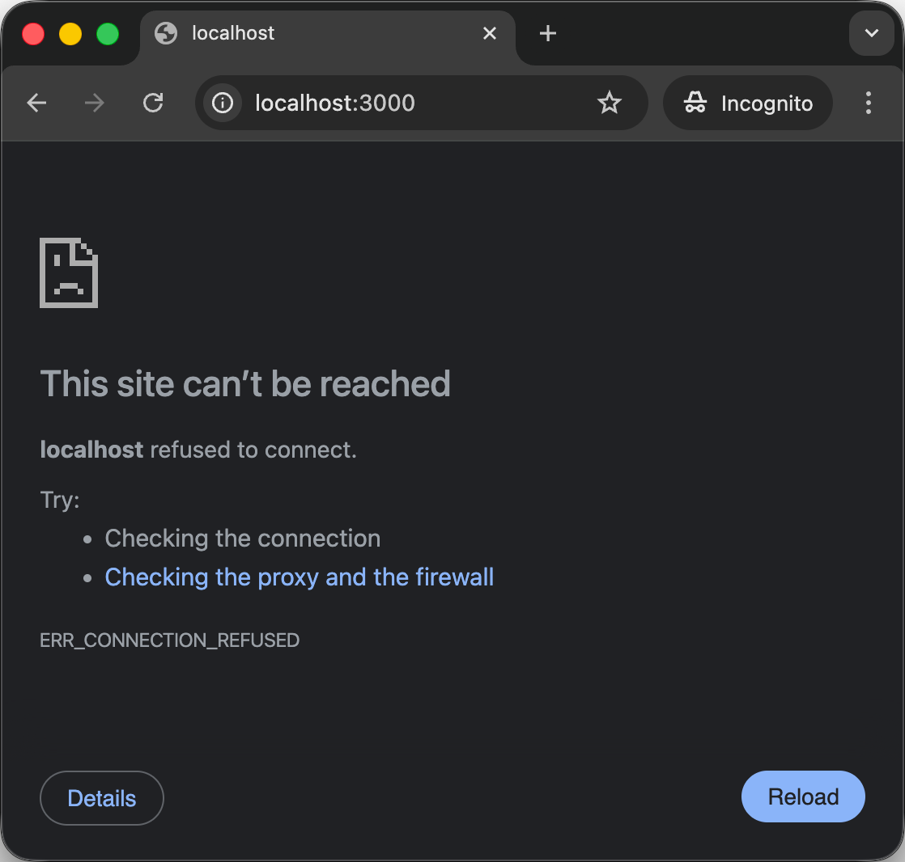
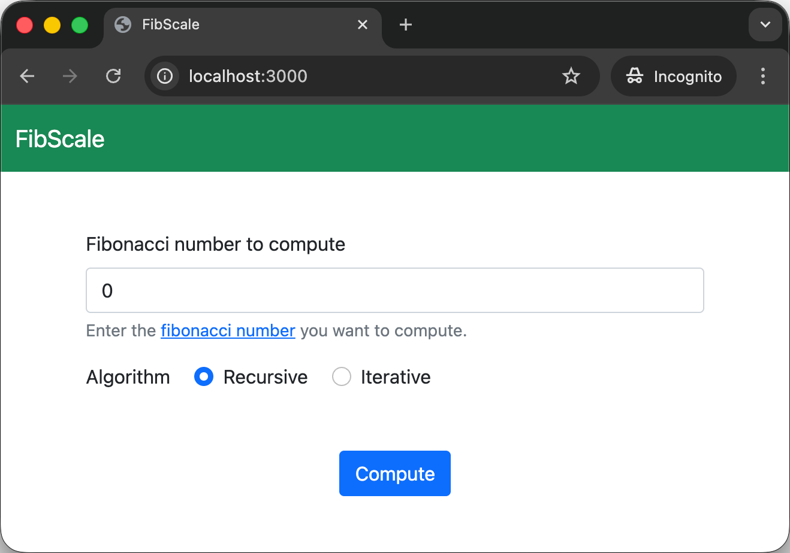
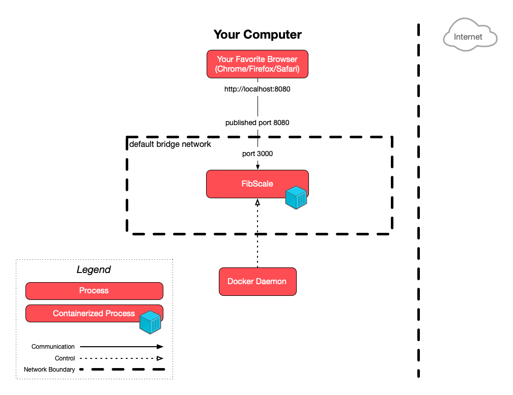
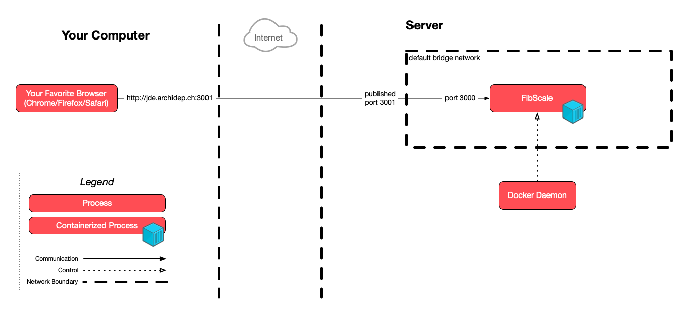

This exercise begins on your local machine.
Containerize a web application using Docker
In this exercise, you will apply your knowledge of Docker and Linux administration to containerize a standalone web application (without a database). The application you will be containerizing is FibScale from the horizontal scaling exercise.
On this page
Table of contents
 Legend
Legend
Parts of this exercise are annotated with the following icons:
-
 A task you MUST perform to complete the exercise
A task you MUST perform to complete the exercise
-
 Optional step that you may perform to make sure that
everything is working correctly, or to set up additional tools that are not required but can
help you
Optional step that you may perform to make sure that
everything is working correctly, or to set up additional tools that are not required but can
help you
-
 Advanced tips on how to go further (or
challenges!)
Advanced tips on how to go further (or
challenges!)
 The end of the exercise
The end of the exercise-
 The architecture of the software you ran or
deployed during this exercise
The architecture of the software you ran or
deployed during this exercise
-
 Troubleshooting tips: how to fix common problems you might
encounter
Troubleshooting tips: how to fix common problems you might
encounter
Containerize FibScale
Requirements
You need to have Docker installed on your machine. To do so, install Docker Desktop and use the recommended settings.
Fork and clone the FibScale repository:
$> git clone git@github.com:<YourGitHubUser>/fibscale.git
Open the project in your favorite text editor.
Create a .dockerignore file
If you look at the FibScale repository from the horizontal scaling exercise (on your cloud server), you
may notice that a bunch of folders were created when running various commands
like bundle install during the course of the exercise:
└── fibscale
├── compose.yml
├── config
├── Dockerfile
├── fibscale.rb
├── Gemfile
├── Gemfile.lock
├── LICENSE-txt
├── locustfile.py
├── __pycache__ <---- Created when running Locust
├── README.md
├── spec
├── vendor <---- Created when running "bundle install"
└── views
These folders were not part of the original repository. They
contain dependencies and compiled files that can be produced from the source
code and should be ignored. Indeed, if you look at the repository’s
.gitignore file, you will see that they are ignored by
Git.
Docker has a similar mechanism that plays a crucial role in optimizing the
Docker build process: the .dockerignore file. This file specifies a pattern of
files and directories to exclude from the context sent to the Docker daemon
during the build process. This avoids copying unnecessary files when building
the Docker image.
Given this information, create a .dockerignore file at the root of the project
and exclude these irrelevant folders. The syntax is the same as the .gitignore
file.
When building an image, Docker sends the entire context (i.e. all files and
directories located in the build’s root directory) to the Docker daemon. This
can be inefficient and time-consuming, especially if the context includes large
or unnecessary files. By defining what files or directories should be ignored,
the .dockerignore file helps in reducing the build time, ensuring that only
relevant files are sent to the daemon. This not only streamlines the build
process but also results in smaller Docker images, as it avoids including
unnecessary files that do not contribute to the functionality of the container.
Additionally, excluding irrelevant files enhances security by preventing
unwanted or sensitive files from being inadvertently included in the Docker
image.
The vendor folder in the FibScale project contains all the library
dependencies that the project requires. These libraries are installed based on
the definitions in the project’s Gemfile file and can include a vast number of
files and folders, specific to the environment in which they were installed.
Including this folder in a Docker image is not recommended due to the potential
for compatibility issues across different environments and the significant
increase in the image size, which can lead to slower and less efficient
deployments.
The __pycache__ contains a cache of compiled Python files that were
automatically created when you first executed the load testing scenario with
Locust. It exists to speed up future executions. Similarly to the dependencies
in vendor, it may contain bytecode that is incompatible with systems other
than your machine (or server) and should therefore not be included in the Docker
daemon’s context.
The .dockerignore file is generally a superset of the .gitignore file. In
other words, it will ignore the same files as the .gitignore files as well as
other additional files that are not relevant to a Docker build. In the case of
FibScale, for example, you might ignore the spec folder which contains
automated tests that are important during development but completely irrelevant
to building the project’s Docker image.
Create a Dockerfile
To build a Docker image, you need to create a file named “Dockerfile” at the root of the project, so go ahead and do that.
You will now need to add several instructions to this file to define how the image should be built. In other words, you will write the recipe for your Docker image.
Do not hesitate to use the Dockerfile reference for more information about each instruction.
Choose a base image
The first step when building an image is to choose a base image. A base image in a Dockerfile serves as the foundational layer upon which all other layers of a Docker container are built. It typically includes the operating system and essential system libraries, providing the basic environment and tools necessary for running applications and services within the container.
FibScale’s requirements are simply the Ruby language, version 3.2 or more recent (and Bundler, Ruby’s package manager, but it generally comes packaged together with Ruby).
Explore the Docker Hub to find a base image fulfilling this requirement. We recommend only using official Docker images.
Given this information, insert the FROM instruction followed by the base image
you chose at the top of your Dockerfile.
Using a base image in Docker without specifying a tag, like awesome (or
awesome:latest which is equivalent), can lead to unpredictable behaviors, as
it always pulls the latest version, which may introduce breaking changes or
incompatibilities.
In contrast, specifying a tag like awesome:4.2-alpine ensures consistency and
reliability: it uses a specific version (4.2 in this example) based on the
lightweight and secure Alpine Linux distribution. This approach not
only provides a stable and predictable environment but also results in a smaller
and more efficient Docker image, benefiting from Alpine’s minimalistic
footprint.
Create a group and user
Friends don’t let friends run containers as root.
By default, Docker containers run with root privileges (UID 0), including the application that runs inside them. This is considered a significant security risk because it grants full administrative privileges inside the container.
If an attacker gains access to the container, they could exploit these elevated privileges to perform malicious activities, such as accessing sensitive data, installing unauthorized software, or attacking other parts of the system. This is particularly dangerous because the effects can potentially extend beyond the container, especially if the container runtime is not properly isolated or if there are vulnerabilities in the host system. To mitigate this risk, it’s best practice to run containers with a non-root user, thereby limiting the potential impact of a security breach.
The next step in your Dockerfile will be to create a new user and group that cannot access the rest of the system.
Here are the Linux commands to create a group and user depending on which base image you chose:
# Debian/Ubuntu (often the default base for Docker images when not specified)
$> groupadd --system fibscale
$> useradd --create-home --gid fibscale --system fibscale
# Alpine Linux
$> addgroup --system fibscale
$> adduser --system --ingroup fibscale fibscale
These commands do two things:
- The first command creates a new group named
fibscale, with the--systemflag indicating it’s a system group (i.e. not a human user). - The second command creates a new user named
fibscale, adds them to thefibscalegroup with--gid fibscaleor--ingroup fibscale, and marks them as a system user with the--systemflag.
Given this information, insert the necessary RUN instructions into your
Dockerfile.
Create a working directory
It’s a good idea to define a dedicated workspace within the container for our
app. It avoids the need for repetitive cd (change directory) commands
and reduces the risk of file misplacement or path errors, ensuring that all
operations are performed in the intended directory, thus making the Dockerfile
more organized and error-resistant.
You can create this workspace by adding the following line to your Dockerfile:
WORKDIR /fibscale
The WORKDIR instruction in a Dockerfile is used to set the working directory
for any subsequent RUN, CMD, ENTRYPOINT, COPY, and ADD instructions in
the Dockerfile.
Copy files to the working directory and change permissions
At this point, you have a base image, a new user and a working directory.
However, none of the application’s files are actually anywhere in the image.
Let’s do that now by using the COPY instruction.
The COPY instruction follows the syntax COPY <source> <destination>. Here,
<source> refers to the file(s) or directory(s) you want to copy from the
Docker build context (the directory containing the Dockerfile and other
resources), and <destination> is the path within the container where these
files should be placed.
You can also use the optional --chown=<user>:<group> flag to set the ownership
of the copied files at the same time.
To copy everything in the project’s folder (excluding the patterns specified in
the .dockerignore file) to the working directory with the correct ownership,
add the following line to your Dockerfile:
COPY --chown=fibscale:fibscale ./ ./
The first ./ in the command refers to the current directory on the host
machine (the build context). This will be the directory where your Dockerfile is
located. The second ./ refers to the current directory inside the container,
which will be the working directory set by the WORKDIR instruction by default.
Just one more thing: the directory created by the WORKDIR instructions belongs
to the root user by default, so you need to change its ownership to the
fibscale user you created earlier.
In a standard Linux environment, we would do this by running the following command, assuming we were in the correct directory:
$> chown fibscale:fibscale .
Add the necessary RUN instruction to your Dockerfile to change the ownership of
the working directory.
Install build tools
Before installing the application’s dependencies, you will need to install some build tools depending on the base image you chose. Here are the commands to run depending on which base image you chose:
# Debian/Ubuntu (often the default base for Docker images when not specified)
$> apt update
$> apt install -y g++ make patch
# Alpine Linux
$> apk add --no-cache g++ make patch
Add the necessary RUN instruction(s) to your Dockerfile to install these build
tools.
Why is this necessary, you ask? FibScale is a Ruby application which has a
number of libraries as dependencies, defined in its
Gemfile.
Most of the time, Ruby libraries are written in (shock!) Ruby itself, which
means they can be installed without any additional tools. However, some
dependencies may include native extensions: pieces of code written in
lower-level languages like C or C++ for greater speed or lower memory footprint.
These extensions need to be compiled into machine code to work correctly. This
is why we install g++ (the GNU C++ compiler), make (the one
build automation tool to rule them all), and patch (a tool to apply
changes to files). Without these tools, the installation of certain gems will
fail, causing the build of the Docker image to fail.
Switch user
Up to this point in our Docker environment, we have created a user named
fibscale, yet all operations have been executed with root privileges. While
using the root user is fine for initial configuration tasks, it’s essential to
shift to the fibscale user when we start working with our application files,
in order to reduce privileges and thus enhance security.
To make this transition, add a USER instruction to your Dockerfile.
This instruction changes the user context, meaning that all subsequent RUN,
CMD, ENTRYPOINT, and COPY instructions in the Dockerfile will be executed
under the user you specify rather than root.
Install dependencies
You may then install the application’s dependencies (as documented in the README) with the following line in your Dockerfile:
RUN bundle install
Launch the application
The last step in your Dockerfile will be to determine the command executed when
running the container. This is done using the CMD instruction, which there can
only be one of.
In this exercise, you are launching the FibScale application. The command to run it is documented in the README.
Add the necessary CMD instruction to your Dockerfile.
Warning
Don’t confuse RUN with CMD:
RUNruns a command during the Docker build process and commits the result into a new layer of the final image.CMDdoesn’t execute anything at build time, but specifies the intended command for the image. This command will be executed when a container is started from the image.
The CMD instruction can be specified in two formats:
- The exec form:
CMD ["command", "param1", "param2"](preferred) - The shell form:
CMD command param1 param2
Build and run the image
Your Dockerfile should now be ready to be built. To do so, navigate to your project directory in the command line and start the building process:
$> cd /path/to/fibscale
$> docker build -t fibscale .
Let’s break down the second command:
docker build: This is the Docker subcommand used to build an image from a Dockerfile and a “context”. The build context is typically a set of files at a specified location, which are required for building the image.-t fibscale: The-t(or--tag) flag stands for “tag”. It allows you to assign a name to the image you’re creating. In this case, the name (or tag) you’re giving to your new Docker image isfibscale. Naming images is crucial for identification and later use, especially when you want to run or push the image to a registry..: The dot at the end of the command represents the current directory, indicating that Docker should look for the Dockerfile in the current directory. This current directory also becomes the build context sent to the Docker daemon. It means Docker includes the files and folders in this directory (except those specified in.dockerignore, if present) to build the image.
If the build succeeds, you should see it in your list of available images by running:
$> docker images
REPOSITORY TAG IMAGE ID CREATED SIZE
fibscale latest 44bdf838bf5b 2 minutes ago 599MB
You can now run the image by running:
$> docker run fibscale
I, [2025-12-11T21:49:34 #1] INFO -- : Worker: 0 (color: success)
I, [2025-12-11T21:49:34 #1] INFO -- : Max number: 10000 (recursive: 40)
I, [2025-12-11T21:49:34 #1] INFO -- : Default delay: 0.0
== Sinatra (v4.2.1) has taken the stage on 3000
for production with backup from Puma
Puma starting in single mode...
* Puma version: 7.1.0 ("Neon Witch")
* Ruby version: ruby 3.4.7 (2025-10-08 revision 7a5688e2a2)
* Min threads: 1
* Max threads: 1
* Environment: development
* PID: 1
* Listening on http://0.0.0.0:3000
Use Ctrl-C to stop
Beautiful! It looks like the FibScale application is up and running in our container. Let’s try to visit the website by opening http://localhost:3000 in our browser.
Sadly… 

Pause and think about what could possibly be wrong. 
Map your container’s ports
When you run a Docker container, it operates in its own isolated network
environment. This means that services running inside the container, such the
FibScale application, aren’t automatically accessible outside of it. To make
your application accessible from your host machine (or outside the container’s
network), you need to map the container’s ports to your host machine’s ports.
This is where the -p or --publish flag in the docker run command becomes
essential.
The FibScale application inside your container is set to listen on port 3000. However, this port is only exposed within the container’s private network. To access your application from a web browser on your host machine, you must map the container’s port 3000 to a port on your host machine. For example, if you want to access the application via port 8080 on your local machine, you would start the container with the following command:
$> docker run -p 8080:3000 fibscale
Here, -p 8080:3000 instructs Docker to forward traffic coming into port 8080
of your host machine to port 3000 in the container. As a result, when you
navigate to http://localhost:8080 in your browser,
Docker routes these requests to port 3000 in the container, where FibScale is
listening.

Success! 
This port mapping is crucial for web development and testing with Docker, as it bridges the gap between the isolated container environment and your accessible host network, allowing you to interact with your web application as if it were running natively on your local machine. Remember, port numbers on both sides of the colon can be changed based on your needs and the availability of ports on your system.
For clarity and best practice, it’s advisable to specify in your Dockerfile
which ports the container is expected to use, by incorporating the EXPOSE
instruction. While this instruction doesn’t actually open or map any ports, it
serves as an important form of documentation. It informs anyone using the image
about the ports that the application within the container is set to listen on.
This helps users understand how to interact with the containerized application
and can guide them in setting up proper port mappings when they run the
container.
Here’s what your Dockerfile could look like with an Alpine Linux base:
# Base image
FROM ruby:3.4.7-alpine
# Create dedicated user & group
RUN addgroup -S fibscale
RUN adduser -D -G fibscale -S fibscale
# Set working directory
WORKDIR /fibscale
# Copy source files
COPY --chown=fibscale:fibscale ./ ./
# Fix ownership of working directory
RUN chown fibscale:fibscale .
# Install build tools
RUN apk add --no-cache g++ make patch
# Switch to dedicated user
USER fibscale:fibscale
# Install dependencies
RUN bundle install
# Set the command to launch the application
CMD ["bundle", "exec", "ruby", "fibscale.rb"]
And with an Ubuntu base:
# Base image
FROM ruby:3.4.7
# Create dedicated user & group
RUN groupadd --system fibscale
RUN useradd --create-home --gid fibscale --system fibscale
# Set working directory
WORKDIR /fibscale
# Copy source files
COPY --chown=fibscale:fibscale ./ ./
# Fix ownership of working directory
RUN chown fibscale:fibscale .
# Install build tools
RUN apt update
RUN apt install -y g++ make patch
# Switch to dedicated user
USER fibscale:fibscale
# Install dependencies
RUN bundle install
# Set the command to launch the application
CMD ["bundle", "exec", "ruby", "fibscale.rb"]
If you want to learn more about Docker image best practices, you can read about
image optimization and
multi-stage builds, and
you will find a more advanced Dockerfile integrating these concepts in the
docker branch of the FibScale
repository.
Local architecture
This is a simplified architecture of the main running processes and communication flow you have set up in this exercise so far:

{kind=link}
Note
We will learn more about Docker networking and the default bridge network in a later course.
Commit your changes
Finally, don’t forget to commit your changes to your Git repository for posterity:
$> git add .
$> git commit -m "Containerize FibScale with Docker"
$> git push origin main
Run the recipe on your cloud server
Connect to your cloud server with SSH for the rest of this exercise.
Now that your Dockerfile is ready and committed to your Git repository, it’s time to run it on your cloud server, and to see how easy it is to deploy your containerized application anywhere Docker is installed!
Install Docker on the server
Follow the official instructions to install Docker on Ubuntu on your cloud server.
Clone your repository on the server
Then clone your new repository on your server:
$> git clone https://github.com/<YourGitHubUser>/fibscale.git fibscale-docker
Build the Docker image on the server
You can now build your Docker image on the server by running the same command as before:
$> cd fibscale-docker
$> docker build -t fibscale .
Run the containerized FibScale application on the server
Finally, run your containerized FibScale application by running:
$> docker run -d -p 3001:3000 fibscale
For the first port of the -p option, you need to use a port that is publicly
accessible and not already in use on your cloud server. In this example, we are
using port 3001, which is one of the two ports we asked that you open when you
set up your cloud server.
If neither port is available, you can use another like 3002, but make sure to open that port in your cloud server’s firewall settings. Alternatively, you could stop whatever service is using port 3001 to free it (as long as it’s not your delivery for the graded exercise).
The second port of the -p option is the port FibScale listens on within the
container, which is 3000.
You should now be able to access your FibScale application by visiting http://jde.archidep.ch:3001 in your web browser!
Replace jde with your username and archidep.ch with your assigned domain.
Server architecture
This is a simplified architecture of the main running processes and communication flow you have set up on your cloud server in this exercise:

{kind=link}
What have I done?
Through this exercise, you’ve taken a web application written in Ruby and transformed it into a containerized application, harnessing the power and flexibility of Docker.
You started by setting up your environment, creating a .dockerignore file to
optimize the build process, and crafting a Dockerfile from a carefully chosen
base image.
You’ve learned the importance of security by running the container as a non-root user, and you’ve mastered the intricacies of setting up a working directory, copying project files, and managing file permissions within the Docker environment.
Launching FibScale inside the container and making it accessible via port mapping were critical steps that brought your application to life.
Finally, you have replicated the deployment of your containerized application on a cloud server, demonstrating the portability and ease of deployment that Docker offers.